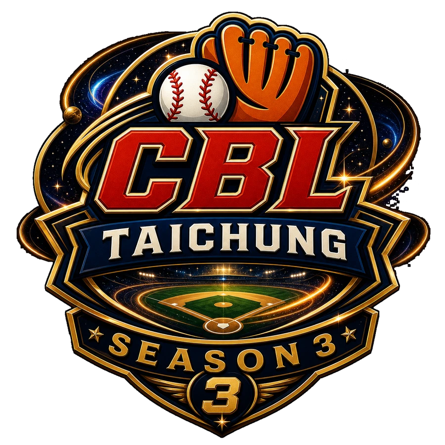

CBL 第三屆推播裝置驗收
確認這台裝置能收到通知
此頁僅登記驗收裝置，不會訂閱球隊、不會對其他人發送通知。
- iPhone 請使用 iOS 16.4 以上，在 Safari 將「此驗收頁」加入主畫面，再開啟「CBL 推播驗收」。這不會取代原本的官網 App。
- 按下登記並允許通知，將驗收代碼提供給聯盟管理人員。
- 管理人員核對後才會發送一則測試；收到後點擊通知，應開啟官網賽程。
尚未登記。正式球隊通知不會因此開啟。
裝置驗收代碼
只需回報此代碼，不需提供密碼、登入連結或推播金鑰。登記有效 24 小時。